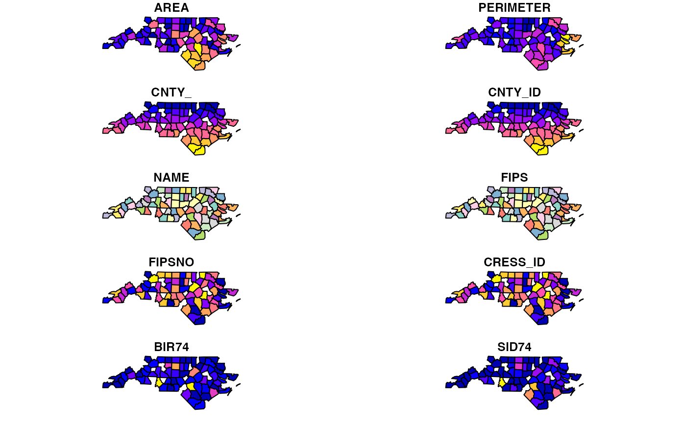
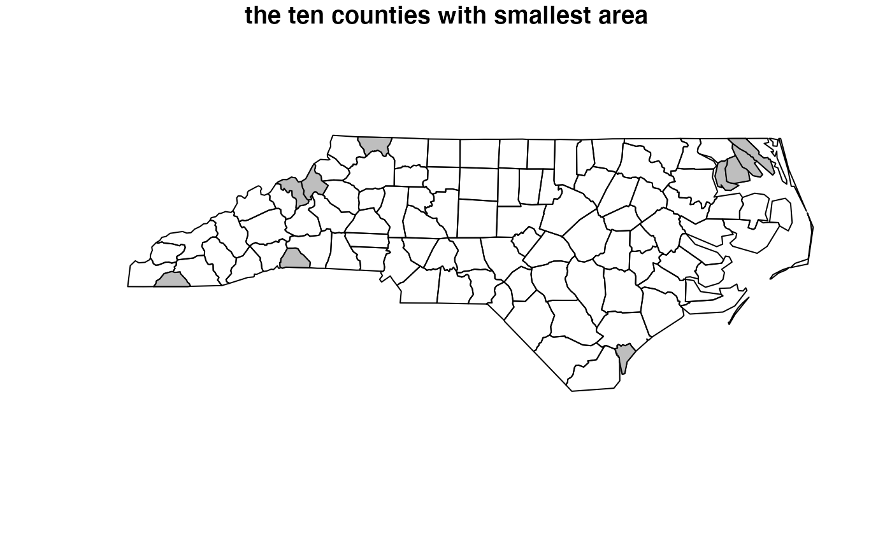
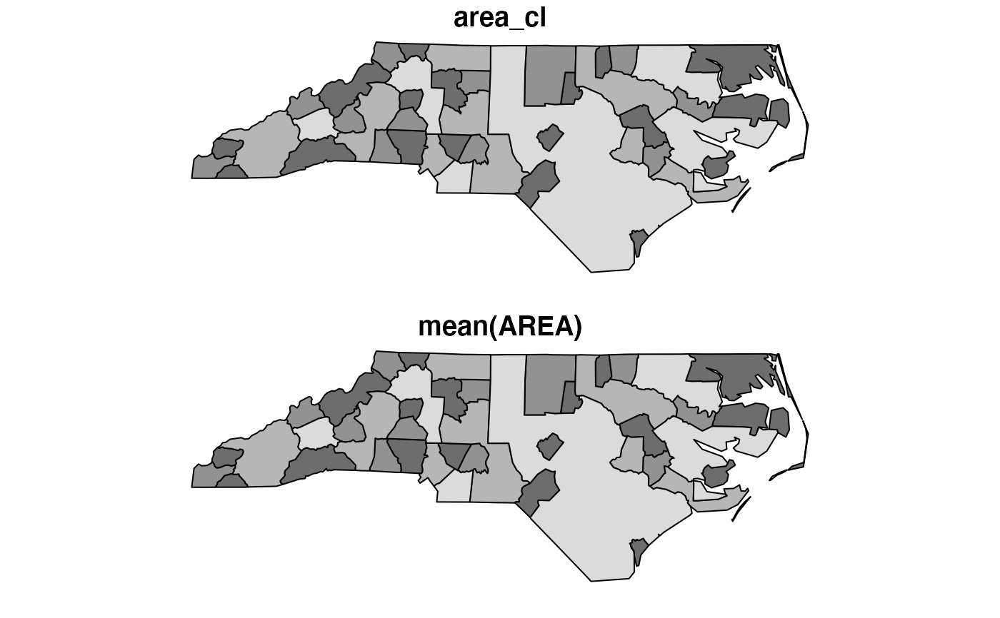
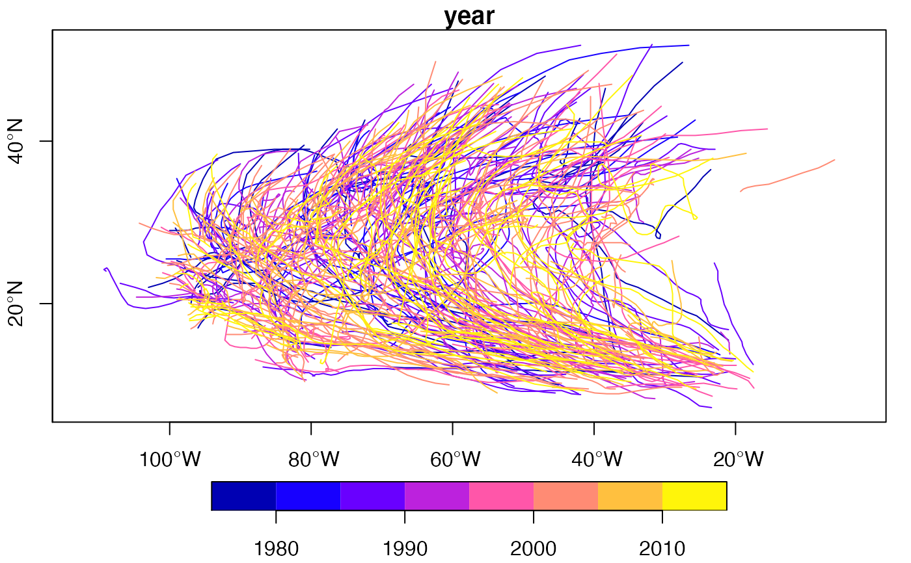

Tidyverse methods for sf objects. Geometries are sticky, use as.data.frame to let dplyr's own methods drop them. Use these methods without the .sf suffix and after loading the tidyverse package with the generic (or after loading package tidyverse).
filter.sf(.data, ..., .dots)
arrange.sf(.data, ..., .dots)
group_by.sf(.data, ..., add = FALSE)
ungroup.sf(x, ...)
rowwise.sf(x, ...)
mutate.sf(.data, ..., .dots)
transmute.sf(.data, ..., .dots)
select.sf(.data, ...)
rename.sf(.data, ...)
slice.sf(.data, ..., .dots)
summarise.sf(.data, ..., .dots, do_union = TRUE, is_coverage = FALSE)
distinct.sf(.data, ..., .keep_all = FALSE)
gather.sf(
data,
key,
value,
...,
na.rm = FALSE,
convert = FALSE,
factor_key = FALSE
)
spread.sf(
data,
key,
value,
fill = NA,
convert = FALSE,
drop = TRUE,
sep = NULL
)
sample_n.sf(tbl, size, replace = FALSE, weight = NULL, .env = parent.frame())
sample_frac.sf(
tbl,
size = 1,
replace = FALSE,
weight = NULL,
.env = parent.frame()
)
nest.sf(.data, ...)
separate.sf(
data,
col,
into,
sep = "[^[:alnum:]]+",
remove = TRUE,
convert = FALSE,
extra = "warn",
fill = "warn",
...
)
separate_rows.sf(data, ..., sep = "[^[:alnum:]]+", convert = FALSE)
unite.sf(data, col, ..., sep = "_", remove = TRUE)
unnest.sf(data, ..., .preserve = NULL)
inner_join.sf(x, y, by = NULL, copy = FALSE, suffix = c(".x", ".y"), ...)
left_join.sf(x, y, by = NULL, copy = FALSE, suffix = c(".x", ".y"), ...)
right_join.sf(x, y, by = NULL, copy = FALSE, suffix = c(".x", ".y"), ...)
full_join.sf(x, y, by = NULL, copy = FALSE, suffix = c(".x", ".y"), ...)
semi_join.sf(x, y, by = NULL, copy = FALSE, suffix = c(".x", ".y"), ...)
anti_join.sf(x, y, by = NULL, copy = FALSE, suffix = c(".x", ".y"), ...)data object of class sf
other arguments
see corresponding function in package dplyr
see corresponding function in dplyr
A pair of data frames, data frame extensions (e.g. a tibble), or lazy data frames (e.g. from dbplyr or dtplyr). See Methods, below, for more details.
logical; in case summary does not create a geometry column, should geometries be created by unioning using st_union, or simply by combining using st_combine? Using st_union resolves internal boundaries, but in case of unioning points, this will likely change the order of the points; see Details.
logical; if do_union is TRUE, use an optimized algorithm for features that form a polygonal coverage (have no overlaps)
see corresponding function in dplyr
see original function docs
see original function docs
see original function docs
see original function docs
see separate_rows
see original function docs
see original function docs
see original function docs
see separate_rows
see original function docs
see original function docs
see original function docs
see original function docs
see original function docs
see separate
see separate
see separate
see separate
see unnest
A pair of data frames, data frame extensions (e.g. a tibble), or lazy data frames (e.g. from dbplyr or dtplyr). See Methods, below, for more details.
A character vector of variables to join by.
If NULL, the default, *_join() will perform a natural join, using all
variables in common across x and y. A message lists the variables so that you
can check they're correct; suppress the message by supplying by explicitly.
To join by different variables on x and y, use a named vector.
For example, by = c("a" = "b") will match x$a to y$b.
To join by multiple variables, use a vector with length > 1.
For example, by = c("a", "b") will match x$a to y$a and x$b to
y$b. Use a named vector to match different variables in x and y.
For example, by = c("a" = "b", "c" = "d") will match x$a to y$b and
x$c to y$d.
To perform a cross-join, generating all combinations of x and y,
use by = character().
If x and y are not from the same data source,
and copy is TRUE, then y will be copied into the
same src as x. This allows you to join tables across srcs, but
it is a potentially expensive operation so you must opt into it.
If there are non-joined duplicate variables in x and
y, these suffixes will be added to the output to disambiguate them.
Should be a character vector of length 2.
an object of class sf
select keeps the geometry regardless whether it is selected or not; to deselect it, first pipe through as.data.frame to let dplyr's own select drop it.
In case one or more of the arguments (expressions) in the summarise call creates a geometry list-column, the first of these will be the (active) geometry of the returned object. If this is not the case, a geometry column is created, depending on the value of do_union.
In case do_union is FALSE, summarise will simply combine geometries using c.sfg. When polygons sharing a boundary are combined, this leads to geometries that are invalid; see for instance https://github.com/r-spatial/sf/issues/681.
distinct gives distinct records for which all attributes and geometries are distinct; st_equals is used to find out which geometries are distinct.
nest assumes that a simple feature geometry list-column was among the columns that were nested.
library(dplyr)
nc = st_read(system.file("shape/nc.shp", package="sf"))
#> Reading layer `nc' from data source
#> `/private/var/folders/24/8k48jl6d249_n_qfxwsl6xvm0000gn/T/Rtmp88sm6P/temp_libpath40c71db0b674/sf/shape/nc.shp'
#> using driver `ESRI Shapefile'
#> Simple feature collection with 100 features and 14 fields
#> Geometry type: MULTIPOLYGON
#> Dimension: XY
#> Bounding box: xmin: -84.32385 ymin: 33.88199 xmax: -75.45698 ymax: 36.58965
#> Geodetic CRS: NAD27
nc %>% filter(AREA > .1) %>% plot()
#> Warning: plotting the first 10 out of 14 attributes; use max.plot = 14 to plot all

# plot 10 smallest counties in grey:
st_geometry(nc) %>% plot()
nc %>% select(AREA) %>% arrange(AREA) %>% slice(1:10) %>% plot(add = TRUE, col = 'grey')
title("the ten counties with smallest area")

nc$area_cl = cut(nc$AREA, c(0, .1, .12, .15, .25))
nc %>% group_by(area_cl) %>% class()
#> [1] "sf" "grouped_df" "tbl_df" "tbl" "data.frame"
nc2 <- nc %>% mutate(area10 = AREA/10)
nc %>% transmute(AREA = AREA/10, geometry = geometry) %>% class()
#> [1] "sf" "data.frame"
nc %>% transmute(AREA = AREA/10) %>% class()
#> [1] "sf" "data.frame"
nc %>% select(SID74, SID79) %>% names()
#> [1] "SID74" "SID79" "geometry"
nc %>% select(SID74, SID79, geometry) %>% names()
#> [1] "SID74" "SID79" "geometry"
nc %>% select(SID74, SID79) %>% class()
#> [1] "sf" "data.frame"
nc %>% select(SID74, SID79, geometry) %>% class()
#> [1] "sf" "data.frame"
nc2 <- nc %>% rename(area = AREA)
nc %>% slice(1:2)
#> Simple feature collection with 2 features and 15 fields
#> Geometry type: MULTIPOLYGON
#> Dimension: XY
#> Bounding box: xmin: -81.74107 ymin: 36.23436 xmax: -80.90344 ymax: 36.58965
#> Geodetic CRS: NAD27
#> AREA PERIMETER CNTY_ CNTY_ID NAME FIPS FIPSNO CRESS_ID BIR74 SID74
#> 1 0.114 1.442 1825 1825 Ashe 37009 37009 5 1091 1
#> 2 0.061 1.231 1827 1827 Alleghany 37005 37005 3 487 0
#> NWBIR74 BIR79 SID79 NWBIR79 area_cl geometry
#> 1 10 1364 0 19 (0.1,0.12] MULTIPOLYGON (((-81.47276 3...
#> 2 10 542 3 12 (0,0.1] MULTIPOLYGON (((-81.23989 3...
nc$area_cl = cut(nc$AREA, c(0, .1, .12, .15, .25))
nc.g <- nc %>% group_by(area_cl)
nc.g %>% summarise(mean(AREA))
#> Simple feature collection with 4 features and 2 fields
#> Geometry type: MULTIPOLYGON
#> Dimension: XY
#> Bounding box: xmin: -84.32385 ymin: 33.88199 xmax: -75.45698 ymax: 36.58965
#> Geodetic CRS: NAD27
#> # A tibble: 4 × 3
#> area_cl `mean(AREA)` geometry
#> <fct> <dbl> <MULTIPOLYGON [°]>
#> 1 (0,0.1] 0.0760 (((-81.17667 36.41544, -81.15337 36.42474, -81.1384 …
#> 2 (0.1,0.12] 0.112 (((-81.45289 36.23959, -81.43104 36.26072, -81.41233…
#> 3 (0.12,0.15] 0.134 (((-80.02406 36.54502, -80.0481 36.54713, -80.43531 …
#> 4 (0.15,0.25] 0.190 (((-76.76126 35.86454, -76.74172 35.88308, -76.7286 …
nc.g %>% summarise(mean(AREA)) %>% plot(col = grey(3:6 / 7))

nc %>% as.data.frame %>% summarise(mean(AREA))
#> mean(AREA)
#> 1 0.12626
nc[c(1:100, 1:10), ] %>% distinct() %>% nrow()
#> [1] 100
library(tidyr)
nc %>% select(SID74, SID79) %>% gather("VAR", "SID", -geometry) %>% summary()
#> VAR SID geometry
#> Length:200 Min. : 0.000 MULTIPOLYGON :200
#> Class :character 1st Qu.: 2.000 epsg:4267 : 0
#> Mode :character Median : 5.000 +proj=long...: 0
#> Mean : 7.515
#> 3rd Qu.: 9.000
#> Max. :57.000
library(tidyr)
nc$row = 1:100 # needed for spread to work
nc %>% select(SID74, SID79, geometry, row) %>%
gather("VAR", "SID", -geometry, -row) %>%
spread(VAR, SID) %>% head()
#> Simple feature collection with 6 features and 3 fields
#> Geometry type: MULTIPOLYGON
#> Dimension: XY
#> Bounding box: xmin: -81.74107 ymin: 36.07282 xmax: -75.77316 ymax: 36.58965
#> Geodetic CRS: NAD27
#> row SID74 SID79 geometry
#> 1 1 1 0 MULTIPOLYGON (((-81.47276 3...
#> 2 2 0 3 MULTIPOLYGON (((-81.23989 3...
#> 3 3 5 6 MULTIPOLYGON (((-80.45634 3...
#> 4 4 1 2 MULTIPOLYGON (((-76.00897 3...
#> 5 5 9 3 MULTIPOLYGON (((-77.21767 3...
#> 6 6 7 5 MULTIPOLYGON (((-76.74506 3...
storms.sf = st_as_sf(storms, coords = c("long", "lat"), crs = 4326)
x <- storms.sf %>% group_by(name, year) %>% nest
trs = lapply(x$data, function(tr) st_cast(st_combine(tr), "LINESTRING")[[1]]) %>%
st_sfc(crs = 4326)
trs.sf = st_sf(x[,1:2], trs)
plot(trs.sf["year"], axes = TRUE)
